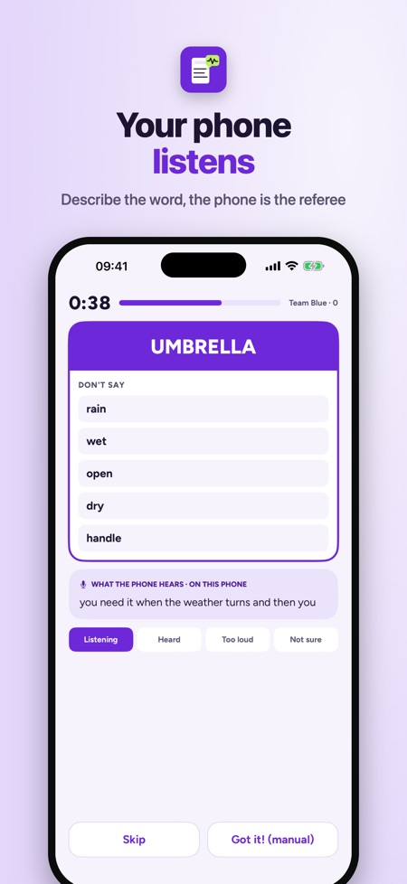
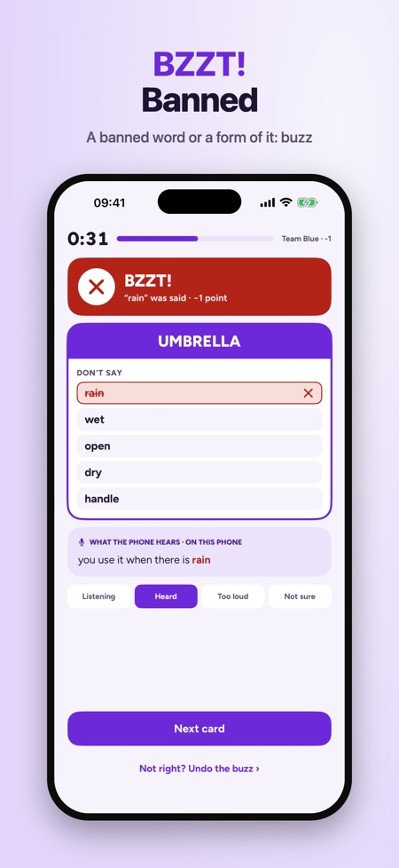
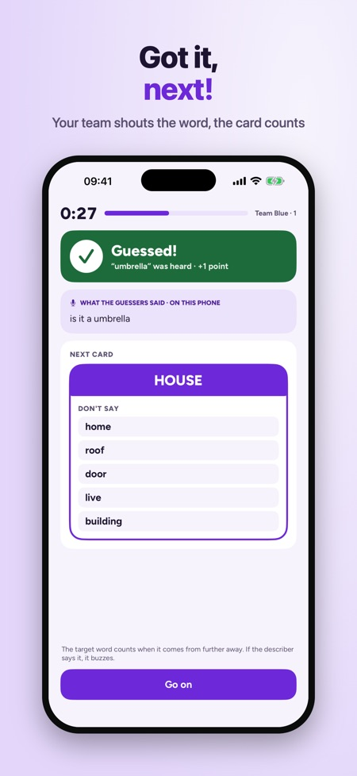

Your phone hears banned words. New for Christmas and New Year: 100 festive cards, from mince pies to Auld Lang Syne. Describe the word without the banned ones while your phone listens and buzzes.



Zoemwoord is the word-guessing party game where your phone is the referee. Whoever describes holds the phone and talks. Say a banned word, or a form of it, and Zoemwoord buzzes at once. When someone on your team shouts the right word, the card counts by itself.
The Basic deck with 150 cards, two teams and automatic buzzing work without a purchase. Zoemwoord Plus is a one-time purchase: every deck, custom cards and sharing, up to six teams and game history. No subscription, no ads.
Zoemwoord only listens during a round and recognises words on your phone. No audio or text is stored or sent. Recognition can be wrong; every buzz can be undone. Without the microphone, play with the buzzer button.